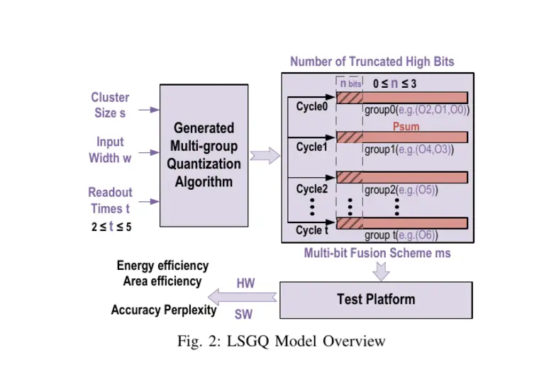
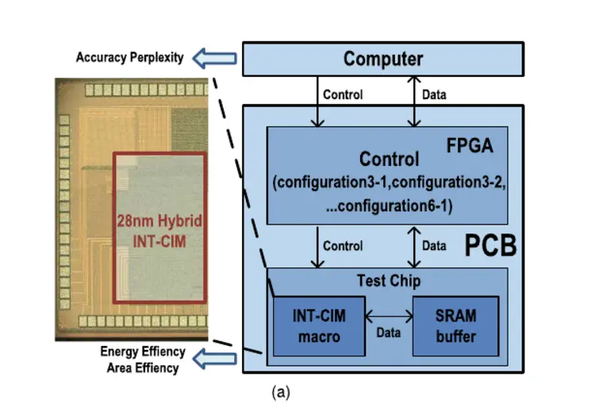
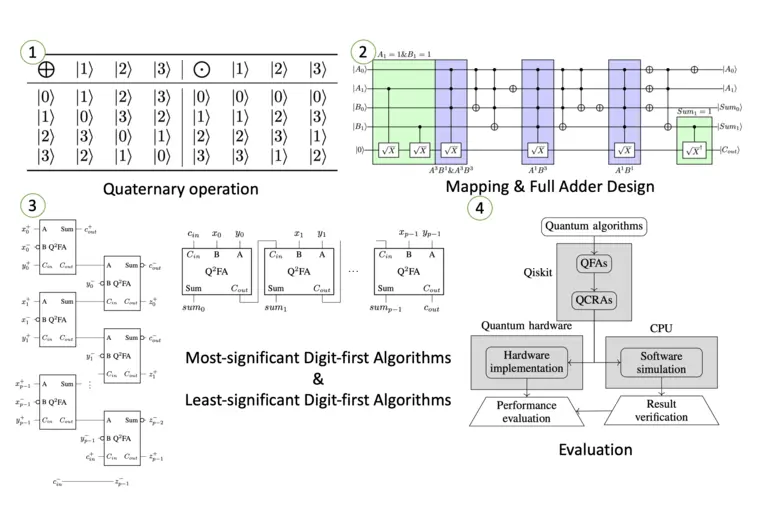

Publications
All works
My research spans neutral-atom quantum computing, quantum error correction, compiler–architecture co-design, and hardware-efficient computing.

2025

Modeling of Less-significant Group Quantization for HybridCIM Architecture
Paper ↗
An LSGQ-FFS Framework for Adaptive Optimization of Hybrid INT-CIM Architecture
Paper ↗2024
